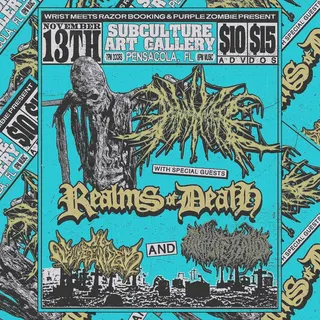
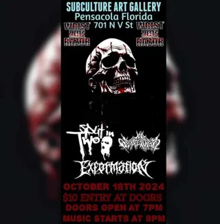

No Surrender
on tourtouring / out-of-town band
4 shows on the diypensacola record since 2024
on the record since October 2024, first seen at subculture on a bill with split in two and exformation. most recently at the handlebar, March 2025.
- first playedOct 18, 2024 · subculture
- most played atthe handlebar ×2 shows
- busiest year2025 · 2 shows
- biggest lineup7 acts · Mar 2025
flyer wall
 Mar 14, 2025 · the handlebar
Mar 14, 2025 · the handlebar
Nov 13, 2024 · subculture
Oct 18, 2024 · subculturepast shows
- 2025
- 14Mar 2025Burning Strong, Statement Of Pride, Spiral, No Surrender, Milestone, Command Voice, Strikeforcethe handlebar
- 8Feb 2025Brainburn, Delta Hate, Paid In Blood, Eyezin, No Surrenderthe handlebar
- 2024
- 13Nov 2024Peacemaker, Realms Of Death, No Surrender, Oinkliterationsubculture
- 18Oct 2024Split In Two, No Surrender, Exformationsubculture
shared bills with
brainburnburning strongcommand voicedelta hateexformationeyezinmilestoneoinkliterationpaid in bloodpeacemakerrealms of deathspiral
act pages are built automatically from the show archive, so something may be off: a misspelled name, a missing link, the wrong type, or a bad local/touring call. no disrespect meant. wrong on any of that, or want a listen link (youtube or bandcamp) or live footage added? send it in.